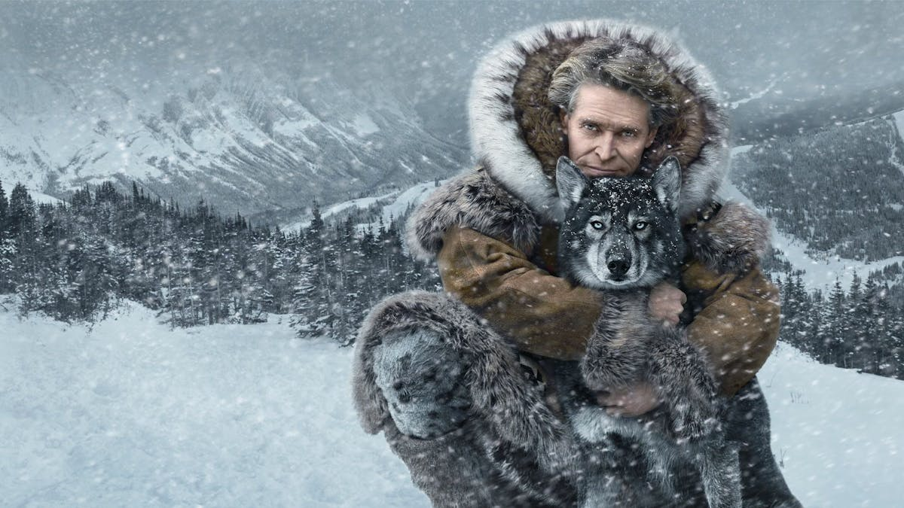

Historien om ett av världshistorens mest ansedda hereistiska djur.
Nome som är en liten civilisation belägen vid världens kant, represive Norra Alaska. Vid 1800 talets senare del hade byn drabbts utav en hård influensa och byborna var i akut behov av medicin. På grund utav rådande omständigheter med temperaturen nertill -60 och hög vindstyrka fungerade ingen vanlig transport. Nomes ända hopp bestod utav slädhundarna.
Togo som var en ras av sibirien husky hade vid flera tillfällen blivit utkastad av sin ägare på grund av att hans fysik och menatlitet skilldes från resterande slädhundar. Turligt nog lyckades ägaren och norrmannen seppela ej bli av med Togo och efter några års tid blev Togo ledarhunden för Sepellas hundspann
Över en sträcka motsvarande Malmö till Norra Afrika sprang Togo och hans spam under extrema väderförhållanden för att hämta medicinen. Togo var hela 12 år och dog när han fyllt 18. Till heder utav dessa enastående hundar finns en staty i New Yourk som representerar Togo
Togo fick valpar vid 16 års åldern som blev eftertraktade världen över. Rasen kom att kallas Sibirien husky utifrån deras ursprung. Huskys är välkända för sitt mod, intelligens och enastående uthållighet, men framförallt för sin lojalitet till människor.